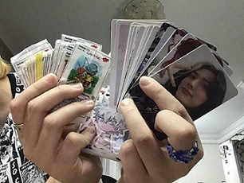

музыка
Что можно сказать о моем самом любимом хобби? скорее всего это прослушивание музыки. я много групп слушаю , в моём плэйлисте более 800 треков, в основном это хип-хоп и к-поп.
У каждого человека есть свое хобби. Кто-то поет под гитару, кто-то играет в кс, а кто-то любит делать
что-нибудь своими руками. Но я - очень разносторонний человек и мне нравятся разные вещи.
Я люблю играть в Геншин, в роблокс , так сказать компьютерные игры. Я играю в игры со своими подругами .
Так же я ОЧЕНЬ люблю смотреть разные сериалы . Недавно я досмотрела 'очень странные дела' н довольно
понравился этот сериал, советую .
Ещё я люблю слушать музыку , я шлушаю рок, к-поп, хип-хоп. Мои любимые группы это stray kids и Nirvana.
Так же я увлекаюсь рисованием и игре на гитаре .


так как я увекаюсь музыкой у меня есть альбомы групп и я коллекционирою карточки из альбомов. так же я коллекционирую наклейки и love is.
самая большая моя коллекция это наверно коллекция с бумажными драконами которых я делаю и коллекция банок из под разных напитков.
Что можно сказать о моем самом любимом хобби? скорее всего это прослушивание музыки. я много групп слушаю , в моём плэйлисте более 800 треков, в основном это хип-хоп и к-поп.